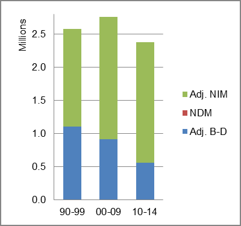

The arrival and departure of immigrants directly affects population size. Between 2010 and 2013 net immigration accounted directly for three-fourths of the U.S. Population increase.
Census Bureau data show immigration directly accounts for 36 percent of the U.S. Population increase. But, because immigrants come disproportionately in their child-bearing years, they also have a large impact on population as a result of the children born after their arrival. That additional impact, added to the new immigration, amounts to an estimated 75 percent of the annual U.S. population growth. And, that share is increasing over time as the foreign-born share continues to increase. The U.S. Census Bureau (CB) released in December 2014 a U.S. population projection that estimated that the foreign-born population would rise from 13.5 percent in 2015 to 18.7 percent in 2060.United States: Sources of Population Change 1990-2013 United States: Sources of Population Change (Adjusted) 1990-2013 
The impact of immigration on the nation's population change is estimated here.
The impact of immigration on population change for each of the states and Washington, DC is estimated here.
The impact of immigration on population change for each Metropolitan Statistical Area (MSA) is estimated by state, and alphabetically.
Some observations based on the analysis of immigration's impact on population change at the national, state, and MSA level are here.
The explanation of how that additional impact from immigration was estimated is here.